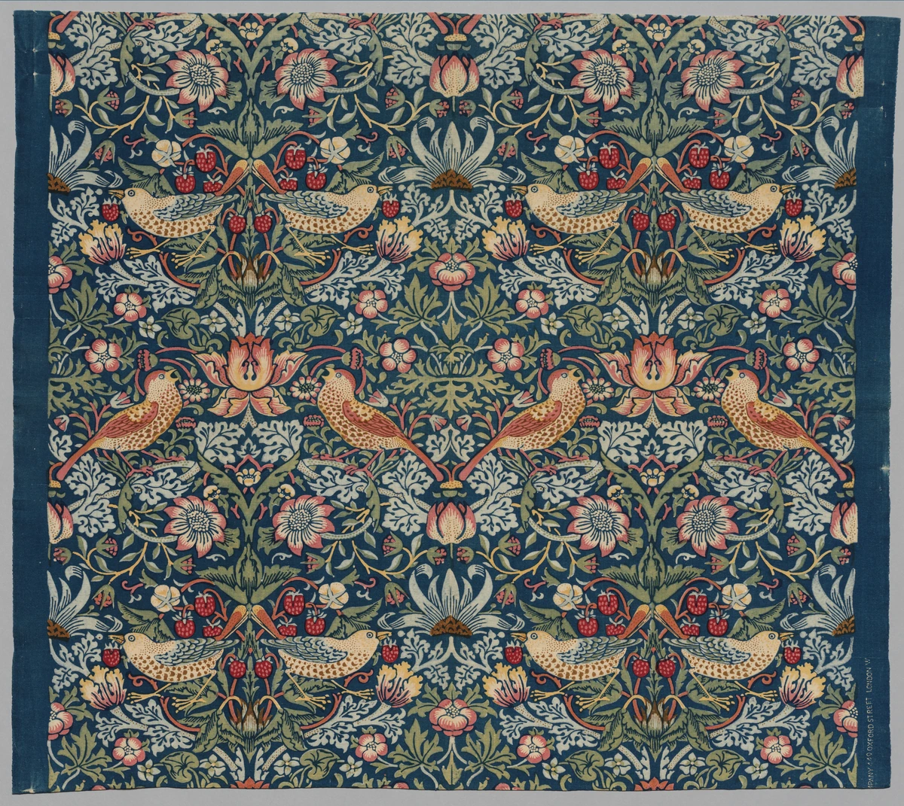
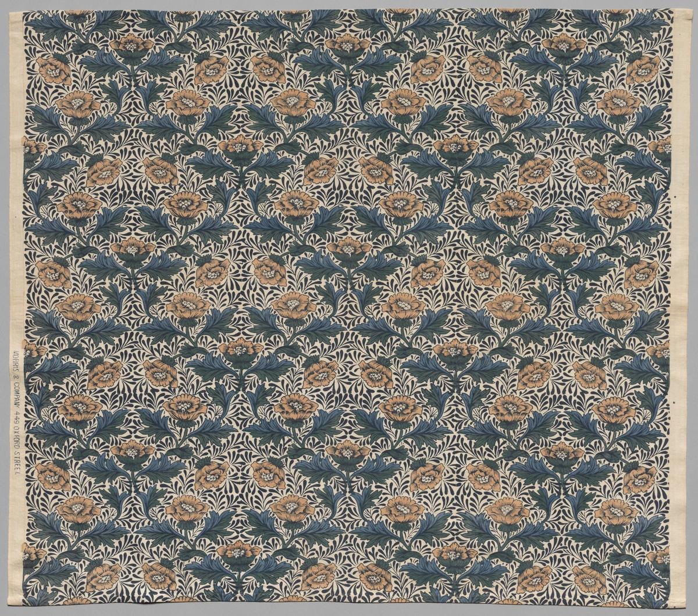
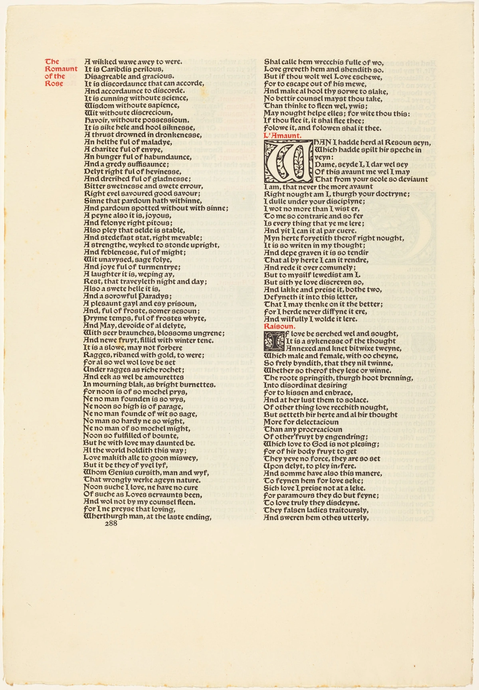

鳥の向きが、反復の軸を作る。
左右に向き合う鳥と苺の組を辿ると、上下左右へつながる模様の単位が見えてきます。動植物の姿を、そのままの写生ではなく面の秩序へ組み直しています。
本文試作・実作品画像3点収録 / 布と書物の比較セット（解説・出典付き） · 2026-10-31
歴史的な運動
Arts & Crafts
毎日使う物は、だれが、どうつくっているのでしょう。
アーツ・アンド・クラフツでは、布や本、家具や家をつくる仕事を考え直しました。
何でつくるかだけでなく、つくる人と使う人のことも大切にしました。
花の模様だけでなく、物のでき方にも目を向けてみましょう。
LOOK AT THE WORK / 実作品を見る

画像を表示できませんでした。下の所蔵元リンクから作品を確認できます。
ARTS & CRAFTS / TEXTILE · デザイン：1883年／この布：1936年頃
William Morris（デザイン） / The Cleveland Museum of Art
1883年の図案と、1936年頃に作られた所蔵個体を区別します。V&Aの同名所蔵品とは別個体です。
左右に向き合う鳥と苺の組を辿ると、上下左右へつながる模様の単位が見えてきます。動植物の姿を、そのままの写生ではなく面の秩序へ組み直しています。
濃い青地に淡い葉、赤い実、黄や桃色の花が重なります。館は藍染めした布を抜染し、木版で複数の色を加えた工程を説明しています。
左右の無地の耳と周縁も残して掲載しています。画面いっぱいの模様と、織物としての幅・端部を一緒に観察できます。
画面の形・配色・布端は掲載画像の実見による観察です。技法と作者帰属の説明は所蔵館の解説に基づきます。布2点と書物の一葉の計3点で、反復文様と文字の設計を比較できます。建築・家具・金工は、さらに視点を広げる今後の候補です。
William Morris (designer), Strawberry Thief, design 1883, printed c.1936. The Cleveland Museum of Art, Gift of Mrs. Henry Chisholm, 1937.696. CC0.
所蔵元の作品解説 ↗所蔵番号1937.696。原作品：館の個別Public Domain指定。取得画像：CC0 1.0。確認日 2026-10-31。
公式配信の原JPEGは無加工で保持し、拡大リンクから取得できます。ページ表示には縦横比と全画面を保った縮小WebPを使用（切り抜き・色補正なし）。原JPEGと各表示画像のサイズ・SHA-256を権利台帳に別記録。撮影者名は未確認のため推定しません。
美術館のOpen Access方針 / CC0 1.0 / 収録画像の権利台帳
米国の所蔵機関による個別PD・CC0指定に基づきます。全法域の権利保証や美術館の推奨を意味しません。
LOOK AT THE WORK / 実作品を見る

画像を表示できませんでした。下の所蔵元リンクから作品を確認できます。
ARTS & CRAFTS / TEXTILE · この布：1920年／原デザイン年は未確認
Kate Faulknerによるデザインとされる / The Cleveland Museum of Art
館の本文は作者を推定表現で示します。1920年は所蔵品の年代で、Faulknerの制作年や原デザイン年とは断定しません。布の比較を広げる補助例です。
花と大きな葉が斜めの列を作り、その間を細かな枝葉が埋めます。館はこの小さくほぼ正方形のリピートを、Faulknerの特徴として説明しています。
《Strawberry Thief》の濃い青地に対し、こちらは淡い地に青緑の葉と黄褐色の花。地の明るさを変えることで、同じ植物文様でも密度の感じ方が変わります。
左端にはMORRIS & COMPANYの文字が見えます。館の本文はKate Faulknerによるデザインを推定しており、Morris本人の作品と断定せず、工房の複数の作り手を考える補助例として扱います。
画面の形・配色・布端は掲載画像の実見による観察です。技法と作者帰属の説明は所蔵館の解説に基づきます。布2点と書物の一葉の計3点で、反復文様と文字の設計を比較できます。建築・家具・金工は、さらに視点を広げる今後の候補です。
Attributed to Kate Faulkner (designer), Peony, 1920 (this cloth). The Cleveland Museum of Art, Gift of Mrs. Henry Chisholm, 1937.700. CC0.
所蔵元の作品解説 ↗所蔵番号1937.700。原作品：館の個別Public Domain指定。取得画像：CC0 1.0。確認日 2026-10-31。
公式配信の原JPEGは無加工で保持し、拡大リンクから取得できます。ページ表示には縦横比と全画面を保った縮小WebPを使用（切り抜き・色補正なし）。原JPEGと各表示画像のサイズ・SHA-256を権利台帳に別記録。撮影者名は未確認のため推定しません。
美術館のOpen Access方針 / CC0 1.0 / 収録画像の権利台帳
米国の所蔵機関による個別PD・CC0指定に基づきます。全法域の権利保証や美術館の推奨を意味しません。
LOOK AT THE WORK / 実作品を見る

画像を表示できませんでした。下の所蔵元リンクから作品を確認できます。
ARTS & CRAFTS / BOOK DESIGN · 1896年刊
William Morris（書物の設計・装飾） / National Gallery of Art, Washington
NGA所蔵の一葉（1987.73.3）の288頁です。1896年刊の本文面で、後年のRollins論考を伴う外装や製本された一冊全体ではありません。
黒い本文が二本の縦長の柱を作ります。列間と外側の余白を比べると、紙全体の中で文字の密度が調整されていることが分かります。
左の欄外見出しと右段の短い見出しだけが赤くなっています。黒い本文と役割を分け、装飾と情報の区切りを同じ紙面で働かせています。
右段の大きな頭文字には植物のような模様が組み込まれています。布の全面反復とは異なり、装飾が読み始める場所を示します。掲載面には人物挿絵はありません。
段組・赤黒の使い分け・頭文字・余白は掲載面の実見による観察です。館の記録はChaucer・Troy活字とMorrisの装飾頭文字を記載しています。書物全体の挿絵や印刷工程をこの一頁だけで代表させません。
William Morris, A Leaf from the Kelmscott Chaucer, published 1896, p.288. Gift of William B. O’Neal, 1987.73.3. Courtesy National Gallery of Art, Washington. CC0.
所蔵元の作品解説 ↗所蔵番号1987.73.3。原作品：館の個別Public Domain指定。取得画像：NGA Open Access方針のCC0 1.0。確認日 2026-10-31。
公式配信の原JPEGは無加工で保持し、拡大リンクから取得できます。ページ表示には縦横比と全画面を保った縮小WebPを使用（切り抜き・色補正なし）。原JPEGと各表示画像のサイズ・SHA-256を権利台帳に別記録。撮影者名は未確認のため推定しません。
美術館のOpen Access方針 / CC0 1.0 / 収録画像の権利台帳
米国の所蔵機関による個別PD・CC0指定に基づきます。全法域の権利保証や美術館の推奨を意味しません。
作品の知名度や画像の入手しやすさだけで選びません。紹介したい作品と、調べて分かったことをまとめました。画像を載せられるかどうかは、別に確かめています。画像の利用許諾を確認できていないものは掲載していません。
布、本、住まい、家具、金属工芸を候補にしています。モリスの周りの人々に加え、アシュビー（Ashbee）とGuild of Handicraftも含めました。ただし、英国の限られた工房に偏っており、世界への広がり全体を代表する選び方ではありません。家具はWMG G71と特定しています。同じSussexシリーズでも、一点ずつ作者や年代を確かめます。
作品の内容を説明する見出し
原題：Strawberry Thief（Cleveland 1937.696）
家具に使う布の模様です。
鳥や苺、葉の形をくり返し、いくつもの色で表しています。
木の板を使って色をつける仕事も、この模様を支えています。
インディゴ抜染・木版捺染の綿布
鳥、苺、植物が繰り返される模様を、つくり方と一緒に見ます。藍（あい）で染めた色を一部抜き、木の版で多くの色を重ねる方法が使われています。ここに載せた布がどの作品なのかを明らかにしたうえで、模様と制作の手順を結びつけて見ましょう。
掲載したのはCleveland 1937.696です。V&A T.586-1919とは別の布です。1883年はデザインの年で、この布の年代は1936年頃です。布の飾りだけでは、この運動が仕事をどう考えたか、建築や本で何を目指したかまでは説明できません。
作品の内容を説明する見出し
原題：Red House（建築・室内・庭園）
家だけでなく、家具や庭、壁の絵までを一緒に考えた場所です。
布に糸で模様をつける仕事にも、何人もの人が加わりました。
一人で全部をつくった家ではありません。
住まい・工芸・共同制作
建築、家具、刺繍（ししゅう）、壁画、庭が、一つの暮らしの場で結びつく例です。National Trustは、つくる手順と職人の技を大切にした室内について説明しています。ジェイン（Jane）らとの共同制作と、1861年の工房設立との関係も紹介しています。モリス一人が考えた飾りとしては扱いません。
建築家ウェッブ（Webb）、家の注文主で室内制作にも関わったモリス家、刺繍や壁画の担当者の役割を分けます。1860年の完成時の姿、後から加えた変更、実現しなかった増築計画は区別します。今の室内写真を、1860年の姿そのままとしては示しません。
作品の内容を説明する見出し
原題：The Works of Geoffrey Chaucer（Kelmscott Press版／一葉・288頁）
本の1ページです。
文字だけでなく、まわりの飾りや空き、紙まで合わせて考えています。
一冊の本をつくるには、絵をかく人や、印刷するための板をほる人の仕事もありました。
書物・活字・装飾・余白
活字、頭文字、周りの飾り枠、挿絵、余白、紙まで、一緒に設計した本です。V&Aは、モリスが行や文字の間隔、読みやすさにも気を配ったと説明しています。過去の印刷物を調べるために写真技術も使いました。単に昔風の飾りをつけた本ではないところに注目します。
掲載画像はNGA 1987.73.3の一葉、288頁です。本の一枚を示すもので、後からつけた外装、V&Aのプロローグの校正刷（こうせいずり。印刷の確認用の刷り）E.1255-1912、綴じられた本全体とは異なります。バーン＝ジョーンズ（Burne-Jones）の人物の挿絵がある面でもありません。本全体の挿絵や、版を彫る仕事の担当は、別の資料で確認します。
作品の内容を説明する見出し
原題：Sussex chair（William Morris Gallery G71）
昔から地方で使われていたいすをもとにしています。
木の部品を組み合わせ、座る所は植物の材料で編みました。
このいすは、大学の部屋で使われました。
家具・生活用品
昔から地方で使われていた椅子をもとにした量産品です。木を回しながら削る旋盤（せんばん）加工の部品と、ラッシュ（座面を編む植物素材）を組み合わせています。この椅子はNewnham Collegeの共用室や学生の部屋で使われました。飾りの模様だけでなく、材料、支える仕組み、日々の使われ方から運動を見ます。
対象はWMG G71です。黒く染めた木の部品とラッシュの座面があり、Newnham Collegeが1890年代頃に購入しました。設計した年と、この椅子を製造した時期は分けます。同館のG51は別の椅子で、1868年頃・Ford Madox Brownと記録されています。Sussexという名前だけで、すべてをウェッブやモリス本人の作と決めることはできません。V&A Circ.27-1962とも別のものです。
作品の内容を説明する見出し
原題：Porringer and Spoon
金属でつくった器とスプーンの組み合わせです。
丸みのある形、長い持ち手、飾りの石が使われています。
布や木のいすとは違う、材料の使い方を考えられます。
銀工・共同工房・器と道具
MetはGuildを、職人が協力して活動する組織と説明しています。丸みのある形、長い柄、半貴石（はんきせき。装飾に使う宝石の一群）の組み合わせを特徴に挙げています。布、本、住宅とは違う材料や使い道を見るための例です。モリス以外の設計者や工房の仕事も紹介できます。
対象はセット1979.411.1-.2です。器だけの記録481997や、匙（さじ）だけの記録491466の寸法・画像を、セット全体のものとしては使いません。木の家具とは違う、金属を加工する仕事の例です。この一点だけで英国全体や、国境を越えた運動全体を代表させることはできません。
家具や布、本や建物をつくる仕事は、暮らしや社会とどうつながるのでしょう。アーツ・アンド・クラフツは、工芸（こうげい。暮らしで使うものをつくる技術や仕事）のあり方を考え直した運動です。材料やつくる手順、つくる人と使う人の関係を大切にしました。手作業か機械か、どんな花柄かということだけでは説明できません。
モリス（Morris）の《Strawberry Thief》は、染めた色を一部抜く「抜染（ばっせん）」と、木の版で布に模様を染める「木版捺染（もくはんなっせん）」を使います。手順が複雑なため、製品は高価になりました。よいものを暮らしに届けたいという考えと、実際に買える価格との間には難しさがあったのです。
一方、モリスは古い印刷物を調べるために写真技術を使いました。新しい技術をすべて拒んだわけではありません。調べるための技術と、作品をつくるための技術は分けて考えましょう。
以下は観察のための問いです。すべての作品に共通する固定ルールや、未取得画像の実見結果ではありません。
家具に使う布《Strawberry Thief》では、インディゴ（藍色の染料）の色を抜く工程と、木版で模様を染める工程に注目します。植物の模様を見るだけでは、使った染料はわかりません。布そのものと、印刷に使う木の版を分けて確かめます。同じモリスの布でも、つくり方は同じではありません。
美術館の研究では、《Cray》には34枚の木版が使われ、藍の抜染は使われていないとされています。一つの作品のつくり方をすべてに当てはめず、図案・材料・印刷の記録をそれぞれ確かめましょう。
《Kelmscott Chaucer》では、活字（かつじ。印刷に使う文字）から行と行の間、文字の間、余白、紙、飾り、挿絵までを一緒に見ます。本の見え方は、文字だけで決まるのでしょうか。モリスは本の設計、バーン＝ジョーンズ（Burne-Jones）は挿絵、フーパー（Hooper）は版を彫る仕事を担当しました。それぞれの役割を区別します。印刷の確認用に刷った「校正刷（こうせいずり）」も、完成して綴じられた本全体とは区別します。
模様に加えて、誰がどの部分をつくったかにも注目します。《Red House》には、ウェッブ（Webb）の建築、ジェイン・モリス（Jane Morris）やエリザベス・バーデン（Elizabeth Burden）らの刺繍（ししゅう）、家具や壁画が組み合わされています。
別々の仕事が、一つの暮らしの場をつくっています。家具G71では、木を回しながら削る「旋盤（せんばん）」加工の部分と、編んだ座面を見ます。布の飾りや、本の文字の組み方とも比べてみましょう。形が単純だという理由だけで、作者をモリスと決めることはできません。
布では繰り返す模様、本では一つのページ、住宅では家と庭の関係に注目します。何を一まとまりとして組み立てるかが、それぞれ違うのです。今の建物や室内の写真が、完成した当時の姿をそのまま示すとは限りません。設計、実際の制作、後から加えた変更を分けて見ます。
COMPARE
アール・ヌーヴォーと比べるときは、植物など自然の形を使っているかだけで判断しません。誰がどのようにつくったか、何に使うか、材料は何か、どんな社会を目指したかも比べます。手仕事と新技術は、必ずしも対立するものではありません。工芸の質と販売価格の関係も、製品や工房ごとの事情から考えましょう。
項目を横に並べる ↗READ TODAY
メトロポリタン美術館（Met）が所蔵するPotter Studioのペーパーナイフは、1915年頃の作品です。材料は銅と苔瑪瑙（こけめのう。苔のような模様が見える石）で、作品番号は2016.741.5です。英国でアシュビー（Ashbee）のもとで働いたポッター（Potter）は、共同工房の環境からヒントを得ました。
美術館はこの作品を、米国での工房制作へとつながった例として紹介しています。ただし、一人の手だけでつくられたとは断定できません。形の似かよりだけでなく、人の移動、学び、共同作業にも歴史のつながりが見えます。今のハンドメイドや地域の工芸と比べるなら、材料やつくり方の伝え方、価格、つくり手にも目を向けてみましょう。
このページを書くときに使った資料です。作品の説明、画像を入手できたかどうか、画像を使う条件は、それぞれ別に確かめています。検索結果で読んだ情報と、元のページを開いて確かめた情報も、調査の記録で分けています。
この項目の収録実画像：3点（一覧に登録した項目の合計：31点）。参照・関連実作品はこの項目0点（図鑑全体2点）。代表作品画像セットの数には含めません。